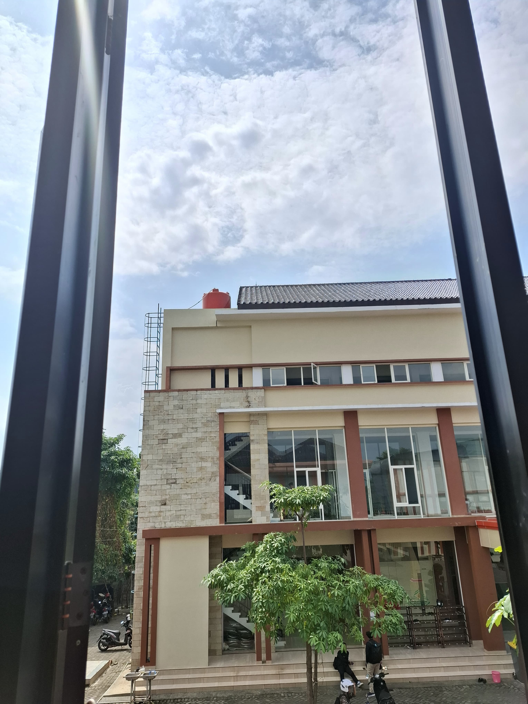
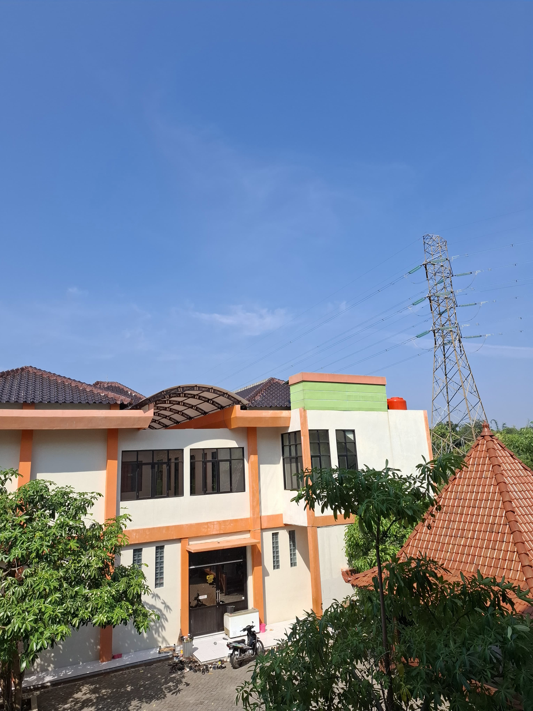

Selamat Datang di Kampus POLITEKNIK BALEKAMBANG JEPARA
Politeknik Balekambang merupakan salah satu lembaga pendidikan Tinggi vokasi yang dikelola oleh pondok Pesantren Rodlotul Mubtadiin Balekambang Gemiring Lor Nalumsari Jepara.sebuah pesantren yang sudah ada sebelum indonesia merdeka. Pesantren ini berdiri pada tahun 1884 oleh Hadrlotus Syaikh KH. Hasbulloh.
Tentang Kami
Pada saat ini Politeknik Balekambang Jepara memiliki tiga Program Studi, antara lain:
- Program Studi D4 Rekayasa Perangkat Lunak
- Program Studi D4 Administrasi Bisnis Internasional
- Program Studi D4 Akuntansi Keuangan Publik
Galeri


Kontak Kami
Alamat: Balekambang Rt 02 Rw 07 Gemiring Lor Nalumsari Jepara 59466 Jawa Tengah